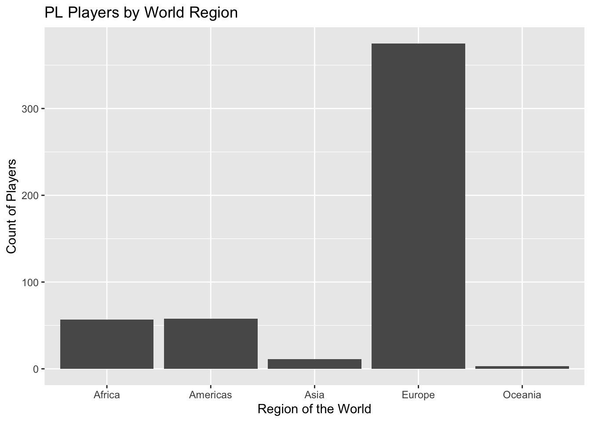

player_dist |>
ggplot() + geom_bar(aes(x = region_name)) +
labs(title = "PL Players by World Region",
x = "Region of the World",
y = "Count of Players")+
scale_fill_viridis_d(option = "viridis")
The bar plot shows the distribution of Premier League football players origin, with categories of 5 regions of the world. From the plot, it can be observed that most of the players are from Europe. Since Premier League takes place in England, which is part of Europe, there might be an association between players origin and performance in the club.
player_dist |>
count(region_name, team) |>
plot_ly(data = _,
x = ~ team,
y = ~ n,
color = ~ region_name,
colors = "Set2") |>
add_markers(text = ~paste0('Football Club: ', team,
'</br>World Region: ', region_name,
'<br>Number in region: ', n),
hoverinfo = "text") |>
layout(showlegend = TRUE,
title = "Player Distribution by Football Club",
xaxis = list(title = "FC"),
yaxis = list(title = "Number of Player by World Region"))We further look at the distribution of player origin of the 20 teams. Using this plot, we can visualize how proportion of players by region origin change from team to team, ordered by the final rank by the end of the season. In the Premier League, there is a law regarding the limit of players without an European nationality. Thus, we intend to explore the relationship between proportion of non-European players and performance of the club.
possession_plot = match_df |>
plot_ly(data = _, x = ~ attack_posession, y = ~ general_goal_difference,
type = 'scatter', mode = 'markers', text = ~team,
marker = list(size = 10, color = ~ general_goal_difference,
colorbar = list(title = 'Goal Difference'),
colorscale = 'turbo')) |>
layout(title = 'Goal Difference vs. Match Style',
xaxis = list(title = 'Possession Rate'),
yaxis = list(title = 'Goal Difference'))
possession_plotlm(general_goal_difference ~ attack_posession, data = match_df) |>
broom::tidy() |>
knitr::kable(digits = 3)| term | estimate | std.error | statistic | p.value |
|---|---|---|---|---|
| (Intercept) | -210.937 | 33.336 | -6.328 | 0 |
| attack_posession | 4.219 | 0.662 | 6.376 | 0 |
The scatter plot shows the relationship between possession rate and goal difference. We can observe that teams with a higher attack possession percentage tend to have more goal scored than conceded, indicating a potential correlation between controlling the game and league success.
pass_plot = match_df |>
plot_ly(data = _ , x = ~ attack_passes_long, y = ~ attack_passes_back,
type = 'scatter', mode = 'markers',
text = ~paste(team, general_goal_difference),
marker = list(size = ~ general_won, color = ~ general_goal_difference,
colorbar = list(title = 'Goal Difference'),
colorscale = 'turbo')) |>
layout(title = 'Long Pass vs Short Pass',
xaxis = list(title = 'Long Pass'),
yaxis = list(title = 'Short Pass'))
pass_plotThis plot compares the number of long passes to short passes for each team, with the size of each point representing the number of games won and the color gradient representing general goal difference. We can observe that teams that score more goals tend to have more short passes while teams that score less goals tend to have more long passes. Passing style greatly defines match tactic, with short pass indicating better ball control and cooperation among the team. We find it interesting to examine team tactics through match data.
match_df$team <- factor(match_df$team, levels = unique(match_df$team),
labels = c("Manchester City", "Liverpool", "Chelsea", "Tottenham", "Arsenal", "Manchester United",
"Wolverhampton", "Everton", "Leicester", "West Ham", "Watford", "Crystal Palace",
"Newcastle", "Bournemouth", "Burnley", "Southampton", "Brighton", "Cardiff", "Fulham",
"Huddersfield"))
yellowcard_plot = plot_ly(match_df,
x = ~ team,
y = ~ general_card_yellow,
type = "bar",
color = ~ team,
colors = 'viridis') |>
layout(yaxis = list(title = 'Total Yellow Card Received'),
xaxis = list(title = 'Team'),
title = 'Total Yellow Card Received by Team')
yellowcard_plotYellow card is given when certain types of foul happens between two players from opposite teams. Foul is used as a tactics during the match to stop the opposite from attacking and regain possession of the ball. The plot shows the total number of yellow card received by each team, ordered by the final league position. It can be observed that lower ranked teams tend to receive more yellow cards. One explanation is that conducting fouls is the tactic they use to take back ball control. Therefore, we are interested to see if there is an association between yellow cards received and team performance.
Transfer windows opens twice a year, which is when football clubs trade players with each other. Economic support from clubs can be decisive in bidding talented players and bringing them to the club. Net spending is calculated by the money spent from buying players minus the money received from selling players.
spending_plot = plot_ly(transfer_df,
x = ~team,
y = ~ -total,
type = "bar",
color = ~team,
colors = 'viridis') |>
layout(yaxis = list(title = 'Total Spending (in Millions)'),
xaxis = list(title = 'Team'),
title = 'Transfer Market Total Spending in Recent Decade')
spending_plotThis histogram shows the net total amount of money spent by the different teams on transfers from 2009 to 2019. We can observe that Manchester City, Liverpool and Arsenal are 3 teams with significant spending in the transfer market over the past decade. Comparing the net spending across the teams, ordered by final rank of the season, it can be seen that generally more spending leads to a better position in Premier League at the end. One outlier is Chelsea Football Club, who may have earned a considerable amount of money by selling players from the Academy (raised by the club).